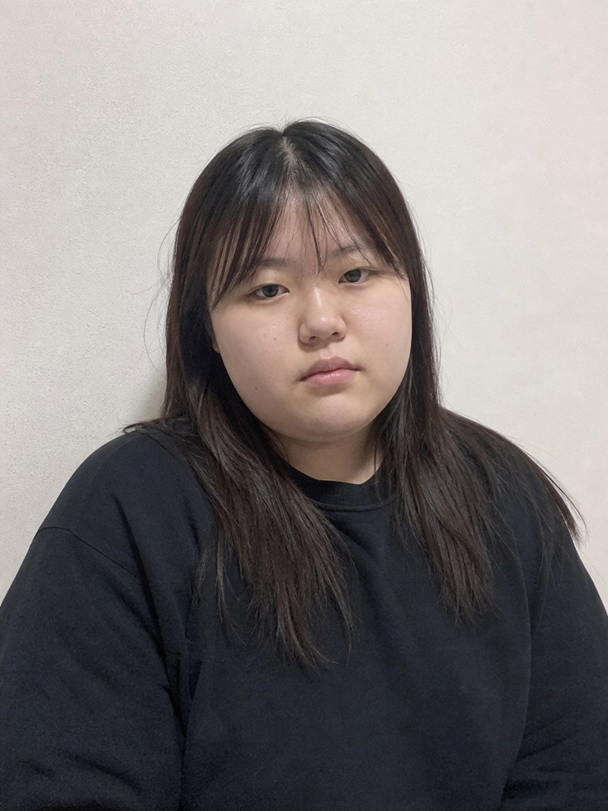
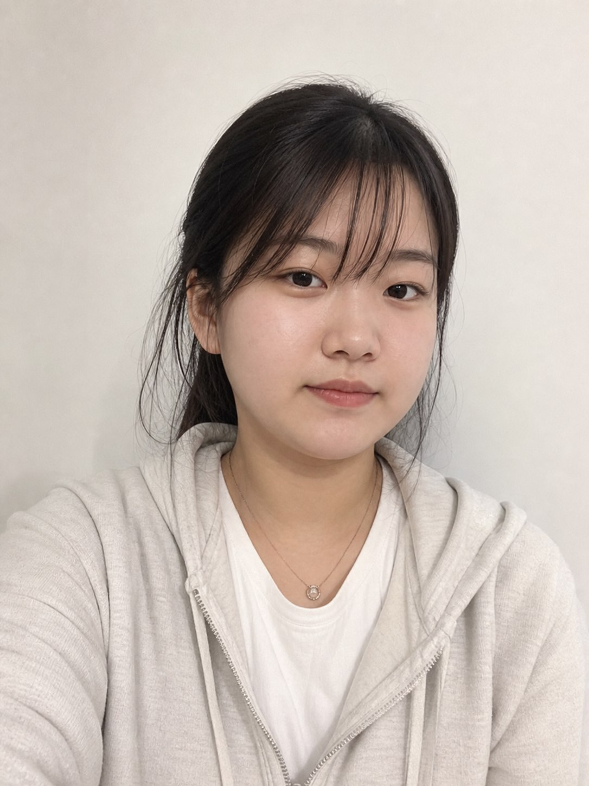

절대점수 28
하위 20~30% 기준
낮은 자기유사 기준을 잡기 위한 카드. 과체중 인상, 둥근 얼굴형, 약한 턱선, 작은 눈, 낮은 꾸밈이 핵심 신호다.
- 주요 신호: 체형 불리함, 낮은 이목구비 선명도, 어색한 표정
- 주의: 사진 품질만 낮은 카드가 아니라 외모 구조도 낮은 구간으로 봄
- 용도: 자기유사 월드컵의 하단 앵커
점수는 호감도 느낌이 아니라 백분위 절대점수다. 30점은 "30점짜리 카드"가 아니라 같은 성별·비슷한 연령대 100명 중 하위 30퍼센트 지점이라는 뜻이다.

낮은 자기유사 기준을 잡기 위한 카드. 과체중 인상, 둥근 얼굴형, 약한 턱선, 작은 눈, 낮은 꾸밈이 핵심 신호다.

프롬프트 목표는 40점대였지만 생성 결과는 AI 미화가 남아 평균 근처로 재판정했다.
프롬프트 목표는 60점대였지만 결과가 꽤 예쁘게 나와 상위 호감형으로 재판정했다.